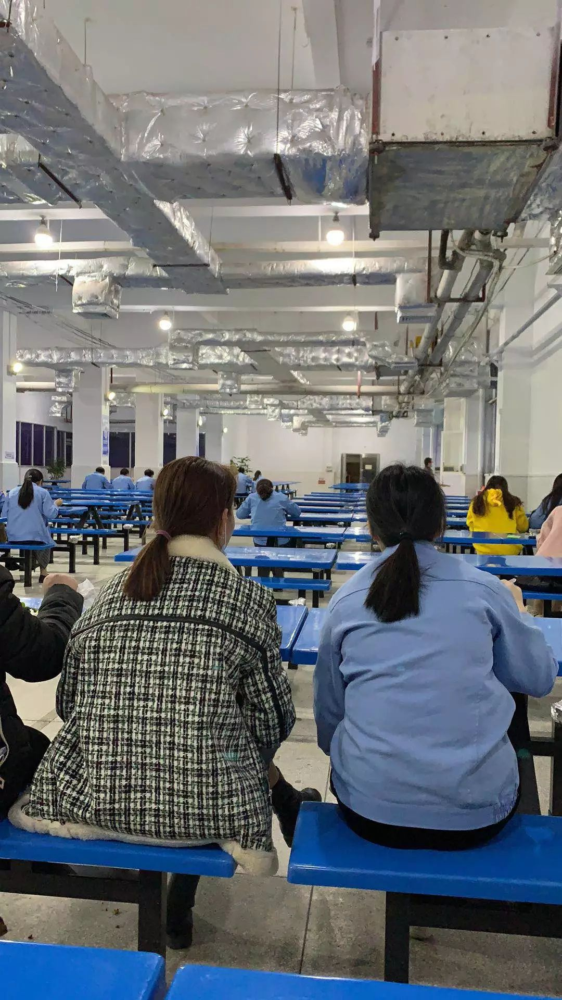

中小企业众生相：复工面临挑战，积极应对“熬过去”
原文链接 备份链接 11.02.2020本文字数：4000，阅读时长大约8分钟 导读：企业虽然很艰难，但目前要做的就是配合执行国家的各项要求，早日战胜疫情，企业能早日找到出路。 作者 | 第一财经 张苑柯 元宵节刚过，疫情之下第一批复工 …
澎湃新闻记者 朱雷
一天量四次体温，除了吃饭，都要戴好口罩。这已经成为李奥（化名）复工以来的日常。
他在广东省潮州市一家电子元件公司做设备管理，自从12日解除隔离，他到目前已经复工6天了。
2月18日，李奥告诉澎湃新闻，公司改变了食堂的格局。“为了避免员工面对面就餐，公司特意把食堂里两边落座的凳子拆了一边，这样大家只能朝一个方向落座。”水龙头和洗手液也都改成了感应式的。

公司食堂只能朝同一方向落座。来源：均为受访者提供
“每天坐班车去公司，车上都能闻到消毒水的味道。”李奥说。上车之前，司机都会给每位乘客量体温，进公司大门之前还要再量一次。上下午上班期间，主管负责人再次登记所有员工的体温。
人手少，是李奥复工以来最深刻的感受，过去他只负责设备管理，而现在他却要“一个人当成三个人用”，除了本职工作，他还要操作机器以及负责产品故障排查。“我们项目组同时招来的五名同事，目前就到了我一个。”上周末，他正常上班。
“现在很害怕机器坏掉，因为一坏就涉及到各种人找我，我实在脱不开身。”李奥向澎湃新闻表示，目前公司生产产量没达到要求，不过没差太多，还在赶进度。
他说，他们主要是网上办公。遇到问题，他经常通过电话联系没来公司的同事帮忙解决。
李奥表示，因为新冠肺炎疫情，公司原本通知正月初七上班的时间被推迟，目前公司仍未宣布正式的上班时间，“但只要隔离时间到了，就可以来上班，看个人情况。”湖北的同事如果实在来不了，也没硬性要求。

水龙头改成了感应式
对赶回潮州准备复工的员工，公司把原本的三人套间提供给需要隔离的员工一个人住。每天都有人送盒饭，还准备了方便面、面包、牛奶等食品供隔离期的员工选择。
李奥隔离期结束后，回到了自己原来住的宿舍，公司派发了消毒用品。米面粮油等，由专人在附近的超市买好送到门口。
本期编辑 邢潭
推荐阅读


原文链接 备份链接 11.02.2020本文字数：4000，阅读时长大约8分钟 导读：企业虽然很艰难，但目前要做的就是配合执行国家的各项要求，早日战胜疫情，企业能早日找到出路。 作者 | 第一财经 张苑柯 元宵节刚过，疫情之下第一批复工 …
原文链接 备份链接 【财新网】（记者 王婧）黄埔区是广州市实体经济大区，GDP在广州各区排名第二，规模以上工业总产值占全市四成，领跑广州各区。据黄埔区通报，截至目前，全区近35万工人中，已有六成即23万人返工。 对企业来说，卫生防疫和 …
原文链接 备份链接 记者：杨冰柯 “ 地方政府和企业高效组织，保证正常复工。 ” “咚～咚～咚咚咚……” 舞龙舞狮、敲锣打鼓，2月18日上午九点，义乌国际商贸城与往年一样举行了开市仪式，只是今年的表演人员全都带 …
原文链接 备份链接 在史晋川看来，政府包飞机、包高铁、派专车去接农民工，可以在短期内缓解企业的用工压力。“但要想从根本上解决用工问题，要深化配套的社会改革，让农民工也享受到当地经济发展的同等好处和权益。” 全文5412字，阅读约需10 …
原文链接 备份链接 ** 作者 | 第一财经 来莎莎 王珍 在武汉当地，近一个月奋斗在一线的不仅仅有医护人员，还有芯片制造和面板厂的员工。 “实在撑不住了。”TCL华星光电技术有限公司（以下简称“华星光电”）一线工程师李明（化名）告诉记 …